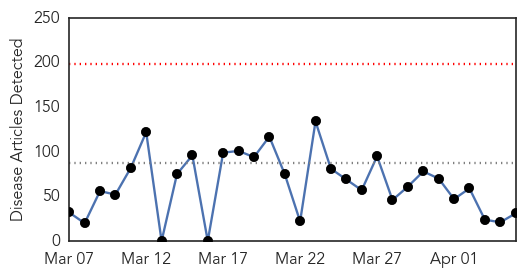
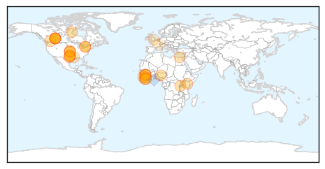

30 Day Trends
Web: 0 alerts, 0 warnings
Twitter: 0 alerts, 0 warnings
622 new deaths (10462 total)
1214 new cases (25228 total)
Top Articles:
- 1.000
- World warned: Prepare for more Ebola-like outbreaks
- 1.000
- Ontario patient tests negative for Ebola
- 1.000
- Ontario patient tests negative for Ebola
- 1.000
- UPDATE: Patient with Ebola-like Symptoms Tests Negative
- 1.000
- Ontario patient tests negative for Ebola
- 1.000
- Suspected Ebola patient being treated in Toronto - National
- 0.999
- Sierra Leone District Records First Ebola Case in Months
- 0.998
- Doctor tested for ebola, discharged from hospital
- 0.997
- Ebola: 'Low-risk' Barrie patient transferred to Sunnybrook for testing
- 0.997
- Ebola: 'Low-risk' Barrie patient transferred to Sunnybrook for testing
- 0.995
- Emails reveal WHO delayed declaring Ebola emergency due to political considerations
- 0.993
- Deadly Ebola Returns to Eastern Sierra Leone's Kailahun District
- 0.990
- News Talk 610 CKTB :: BREAKING: Barrie patient tests NEGATIVE for Ebola :: News News
- 0.989
- Patient in Toronto Tests Negative for Ebola
- 0.983
- Patient with Ebola-like symptoms transferred to Toronto hospital
- 0.980
- Modern Healthcare Modern Healthcare business news, research, data and events
- 0.977
- Dallas hospital seeks dismissal of nurse’s suit over Ebola
- 0.975
- Homeland Security News Wire
- 0.974
- Dallas hospital seeks dismissal of nurse's suit over Ebola
- 0.973
- Dallas hospital seeks dismissal of nurse's suit over Ebola
- 0.964
- RVH patient tests negative for Ebola
- 0.959
- This and other racist sexist emails have now been released in response to a public records request
- 0.948
- Bradford on Avon doctor puts himself on the frontline of Ebola fight
- 0.947
- Possible Ebola case at Barrie hospital, patient taken to Ebola response centre
- 0.914
- News Centre
- 0.908
- Health Ministry’s Post-Ebola ‘Transition Plan’
- 0.905
- Selfless service: Doctor credits God, strict protocol for his healthy return to U.S.
- 0.807
- Politicizing a national tragedy and national pain for whatever reason is inhuman and ungodly
- 0.576
- The Ebola orphans taking desperate measures to survive
- 0.524
- Iron Knights: Mission to Liberia a huge success, said officer who commanded Fort Bliss contingent
- 0.518
- The worst health risks aren’t what most think
Top Tweets:
- 0.912
- Ebola death reported in Sierra Leone region where epidemic originated - The Guardian http://t.co/xbj9j8wP1i ebola EVD
- 0.735
- Liberia's Nightlife Is Back Post-Ebola - Daily Beast http://t.co/V6x4WWuH7G ebola EVD
- 0.735
- Liberia's Nightlife Is Back Post-Ebola - Daily Beast http://t.co/Qq6jg4IB6O ebola EVD
- 0.728
- Patient isolated over possible Ebola symptoms in Barrie Ont. - CTV News http://t.co/GezzdMEdIV ebola EVD
- 0.721
- Race for Ebola vaccine heats up as cases slow - Toronto Star http://t.co/hiZWpbflYO ebola EVD
- 0.599
- World warned: Prepare for more Ebola-like outbreaks - The Independent http://t.co/AGIrpBvNvy ebola EVD
- 0.579
- As of 1 April all counties in Liberia except Montserrado have passed 42 days without a confirmed Ebola case. EbolaResponse
- 0.574
- Possible Ebola patient transferred to Sunnybrook for testing - Toronto Star http://t.co/iwnfxUfPyV ebola EVD
Web/News Articles
Tweets

Human Impact
Article Locations
Article Confidences